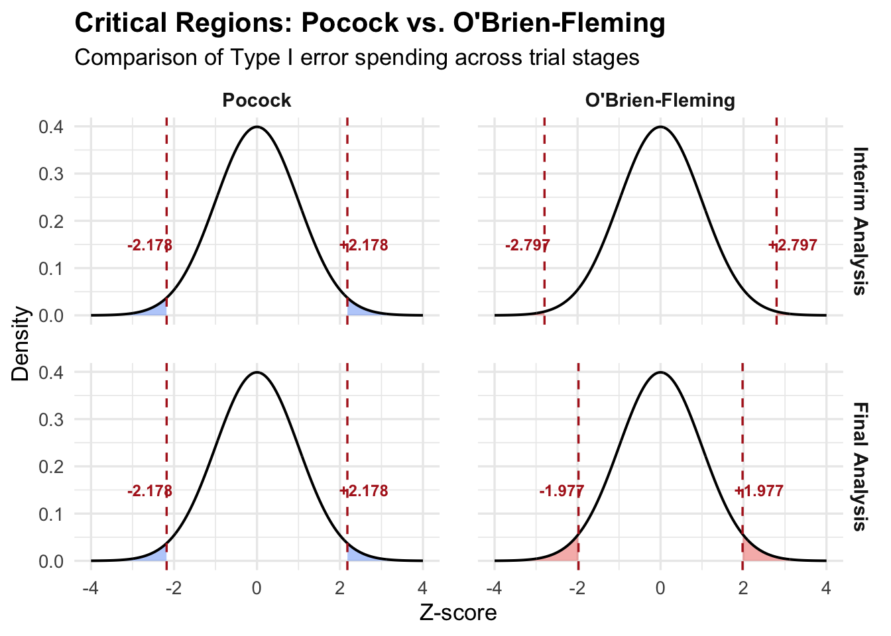

With clinical trial data, it is usually possible to conduct multiple hypothesis tests, for reasons we will discuss shortly. However, the more tests we do, the more likely we are to have a ‘false positive’ result (rejecting a null hypothesis and thinking we have discovered a treatment effect, when the null hypothesis is actually false and there is no real effect). This problem is referred to as multiplicity
If we conduct \(k\) separate hypothesis tests of size 0.05 in attempt to find a treatment effect, but in reality, the treatment has no effect on anything, then the probability of falsely rejecting at least one null hypothesis would be \(1-0.95^k\). For \(k\ge 14\) it becomes more likely than not that we will make a false claim that there is a treatment effect.
9.1 Bonferroni corrections
One general approach for handling multiplicity is to make it more difficult to reject any single null hypothesis, so that the overall probability of falsely rejecting any null is acceptably small.
Suppose we conduct \(k\) hypothesis tests. If we want the probability of falsely rejecting at least one null hypothesis (when all null hypotheses are true) to be \(\alpha\), the Bonferroni correction is to set the size of each test to be \(\alpha/k\). This is a conservative rule (stricter than necessary), but easy to implement. Note that
\[P(\mbox{reject at least one null}) \le \sum_{i=1}^k P(\mbox{reject null in $i$-th test}) = k\frac{\alpha}{k} = \alpha,\]
so by applying the correction, we have \(P(\mbox{reject at least one null}) \le \alpha\).
9.2 Multiple outcome variables
It is common to measure multiple variables for each patient, sometimes referred to as “endpoints”. A trial involving patients with high blood pressure might record “systolic” and “diastolic” blood pressure for each patient, following periods of rest and activity. Cancer trials might record time to “disease progression”, in addition to survival time.
In practice, there will usually be a primary outcome variable: the outcome we would most like the treatment to have some effect on, and then multiple secondary outcome variables: other outcomes that are less important, but for which there is still interest in knowing if the treatment has an effect or not.
Given the distinction between primary and secondary outcome variables, it is not recommended to apply Bonferroni corrections: lowering the size of the test for the primary outcome reduces the power of the test, jeopardising the chances of discovering an effect treatment.
An alternative approach is use to a multivariate hypothesis testing method (for example, “Hotelling’s T-squared test”, which is a multivariate extension of the two-sample \(t\)-test). But again, when there is a distinction between primary and secondary outcome variables, multivariate tests can reduce the chances of detecting an effect on the primary outcome variable and these are not recommended.
The usual approach is to conduct a univariate hypothesis test, typically of size 0.05, on the primary outcome variable. The primary outcome variable is specified in advance (in the trial protocol), and will be considered by the regulator. Additional hypothesis tests on secondary variables are treated as more exploratory (e.g. to suggest further investigation), with results interpreted cautiously due to multiplicity.
9.3 Subgroup analysis
In a subgroup analysis, the aim is to determine whether the treatment is more or less effective than average for particular subgroups of the patient population, whether is the treatment more effective for female patients than male patients. Multiplicity issues arise if we test for lots of different potential subgroup effects. In particular, there may be scepticism if, for example, overall there is no evidence of a treatment effect, but by considering lots of different subgroups, we eventually find one where there appears to be a significant treatment effect.
In general, any subgroup analysis should be set out in advance in the statistical analysis plan, with some rationale as to why the treatment effects may vary between the identified subgroups.
Subgroup effects can be modelled as treatment-subgroup interactions. For a continuous outcome variable, consider again an ANCOVA model such as
\[
Y_{ij}=\mu+\tau_i + \beta x_{ij} + \varepsilon_{ij},
\] with
\(Y_{ij}\) the measured outcome for patient \(j\) allocated to treatment group \(i\), for \(j=1,\ldots,n_i\);
\(i=1\) for “placebo” and \(i=2\) for “drug”;
\(x_{ij}\) a covariate for the corresponding patient, measured before treatment.
Now suppose we have also recorded whether each patient is a smoker. We can extend the model by defining a dummy variable \(s_{ij}=1\) if patient \(ij\) is a smoker and \(s_{ij}=0\) otherwise, and then writing
\[
Y_{ij}=\mu+\tau_i + \beta x_{ij} + \alpha I\{s_{ij}=1\} +\gamma I\{s_{ij}=1\}I\{i=2\}+\varepsilon_{ij}.
\] The parameter \(\alpha\) is the effect of smoking regardless of treatment, and \(\gamma\) is the interaction effect of smoking and treatment, sometimes referred to as a treatment effect modifier. If we consider the expected change in response for the same patient with covariate \(x\), who switches from placebo to drug, for a non-smoker this would be
\[
(\mu + \tau_2 + \beta x ) - (\mu + \beta_x) = \tau_2
\] and for a smoker this would be \[
(\mu + \tau_2 + \beta x + \alpha + \gamma ) - (\mu + \beta_x + \alpha) = \tau_2 + \gamma,
\] so \(\gamma\) is the subgroup effect, representing how the treatment effect changes depending on whether the patient is a smoker.
9.3.1 Testing for multiple subgroup effects
Typically, multiple groups for a trial population can be identified, so that we could test for multiple subgroup effects. Note that these tests may have low power, as sample sizes for particular subgroups may be small.
To manage multiplicity, we can do a single hypothesis test that all subgroup effects are zero: we do an \(F\)-test to compare a linear model with all the subgroup effect included against a linear model with them all removed.
NoteExample
This is example uses a made-up dataset, but is loosely based on a reported Phase III trial in Menzies-Gow et al. (2021)
A parallel group superiority trial has been conducted on a drug to treat severe asthma. Patients are randomised to the drug or placebo, to be taken every month for one year. The outcome is change in FEV\(_1\) (the amount of air a patient can blow out in 1 second; asthma typically reduces this.). Measured covariates are FEV\(_1\) at baseline, whether the patient is taking a “high” or “medium” dose of inhaled glucocorticoids, and whether the patient has year-round allergies to indoor substances such as house dust.
load("datasets/asthma.RData")head(asthma)
treatment fev1_change_w52 fev1_baseline gc allergen
1 Drug -1.11 1.03 Medium Negative
2 Drug 0.85 2.17 High Positive
3 Drug -0.06 2.05 Medium Negative
4 Drug 0.36 3.13 High Negative
5 Drug 0.14 1.20 High Positive
6 Drug -0.17 1.72 High Positive
In addition to testing whether the drug has had an effect compared to placebo, we also want to see if the effect of the drug differs by sex and differs by allergy status.
We can see strong evidence of a treatment effect (evidence that \(\tau_2\neq=0\)). The \(p\)-value for the test of an allergen subgroup effect (\(\gamma_2=0\)) is just above 0.05, so we would be doubtful of a subgroup effect in any case, but we can jointly test that all subgroups effect are zero by fitting a reduced model \[
Y_{ij}=\mu+\tau_i + \beta x_{ij} + \alpha_1 I\{s_{ij}=1\}
+\alpha_2 I\{a_{ij}=1\} +\varepsilon_{ij}.
\]
Analysis of Variance Table
Model 1: fev1_change_w52 ~ fev1_baseline + treatment + allergen + gc
Model 2: fev1_change_w52 ~ fev1_baseline + treatment * gc + treatment *
allergen
Res.Df RSS Df Sum of Sq F Pr(>F)
1 1054 216.72
2 1052 215.83 2 0.89087 2.1711 0.1146
and with a \(p\)-value of 0.11, we have no evidence against the hypothesis of no subgroup effects \(H_0:\gamma_1=\gamma_2=0\)
(If this test did reject \(H_0\), we might then report estimates and confidence intervals for the largest subgroup effects, potentially with follow-up hypothesis tests of individual effects.)
9.4 Interim Analyses
The final situation we consider is where look at the trial results part-way through the trial: this is known as an interim analysis. A clinical trial may have an independent “Data Monitoring Committee” which would periodically review the trial data as it comes in, for example to check for reports of side effects or other safety issues. It may also be desirable to conduct an interim analysis of the effectiveness of the drug:
if there is clear evidence, part-way through the trial, that the drug is effective, it may not be ethical to continue to randomise patients to treatment groups. It may also be commercially desirable to apply for marketing authorisation more quickly;
if, at the interim stage, it appears highly unlikely that the trial will demonstrate a significant treatment effect, there may again be ethical and commercial reasons for stopping the trial early: stopping for “futility”.
The multiplicity consideration is that by doing an interim analysis and an analysis at the end, we are giving ourselves two opportunities to reject the null hypothesis of no treatment effect: the type I error is increased. A further complication is that the tests are not independent: at the end of trial, the data we analyse are the same data we analysed at the interim stage, plus data from patients recruited after the interim analysis; part of the data is used twice.
9.4.1 Modifying significance levels
We specify the overall Type I error rate as usual (typically at 0.05). Here, “overall Type I” error means rejecting \(H_0\) at either the interim analysis or the final analysis. If we define
\(F\): the event of rejecting \(H_0\) if \(H_0\) is true, either at the interim or final analysis;
\(F_I\): the event of rejecting \(H_0\) if \(H_0\) is true, at the interim analysis;
\(F_E\): the event of rejecting \(H_0\) if \(H_0\) is true, at the final analysis,
then
\[P(F) = P(F_I) + P(\bar{F}_I)P(F_E|\bar{F}_I).\] Note that
\(P(F_I)\) is the size of the test at the interim stage: we can choose what this is.
\(P(F_E)\) is the size of the test at the final analysis: we can choose what this is, but conditioning on \(\bar{F}_I\)lowers the probability of falsely rejecting \(H_0\): we have \(P(F_E|\bar{F}_I)<P(F_E)\); we need to obtain ‘more extreme’ data after the interim analysis to push the test statistic into the rejection region, as we know the data obtained before the interim analysis was not ‘sufficiently extreme’.
Suppose we want \(P(F)=0.05\). Clearly, we need \(P(F_I)<0.05\). Suppose we choose \(P(F_I)=0.025\), meaning that we only reject \(H_0\) at the interim stage if the \(p\)-value is less than 0.025. Now we have \[
0.05 = 0.025 + 0.975\times P(F_E|\bar{F}_I),
\] and we have to choose the size of the test \(P(F_E)\) such that \(P(F_E|\bar{F}_I) = 0.0256\). This is a little complicated to do (we have to work with the bivariate distribution of the two test statistics), but there are numerical methods and packages in R for doing this. Here we just note, that the size would be a little larger than 0.0256, for the reason that \(P(F_E|\bar{F}_I)<P(F_E)\).
There are various possibilities: two methods are given below, designed for an overall Type I error rate of 0.05.
Method
Required significance at interim analysis
Required significance at final analysis
Pocock
0.029
0.029
O’Brien-Fleming
0.005
0.048
No interim analysis
NA
0.050
Comparing the Pocock method with no interim analysis there is a stricter requirement (lower significance level) at the final analysis: this is the cost of having the additional opportunity to reject \(H_0\) at the interim stage. In the O’Brien-Fleming, it is much harder to reject \(H_0\) at the interim stage: the evidence has to be much stronger; but it is only slightly harder to reject \(H_0\) at the final analysis, compared with the no-interim analysis option.
We visualise this below, in the case where the test statistic has the \(N(0,1)\) distribution, so that we can work out the critical region given the required significance at each stage.

NoteExample
In the asthma example above, suppose there are two more trials and suppose the null hypothesis \(H_0:\tau_2=0\) is to be tested. Suppose data would be obtained as follows.
Trial A
An interim analysis would give a \(p\)-value of 0.01;
The final analysis would give a \(p\)-value of 0.03.
Trial B
An interim analysis would give a \(p\)-value of 0.04;
The final analysis would give a \(p\)-value of 0.04.
What would the trial outcomes be using (1) the Pocock method; (2) the O’Brien-Fleming method; (3) no interim analysis?
Trial A
With the Pocock method, the trial stops after the interim analysis, with the conclusion of a significant treatment effect.
With the O’Brien-Fleming method method, the trial continues after the interim analysis. After the final analysis, the conclusion is that there is a significant treatment effect.
With no interim analysis, the conclusion at the end of the trial is that there is a significant treatment effect.
Trial B
With the Pocock method, the trial continues after the interim analysis. After the final analysis, the conclusion is that there is not a significant treatment effect.
With the O’Brien-Fleming method method, the trial continues after the interim analysis. After the final analysis, the conclusion is that there is a significant treatment effect.
With no interim analysis, the conclusion at the end of the trial is that there is a significant treatment effect.
In the trial B example, the result that identical data can result in different conclusions is highly contentious! This extends into the more general debate between the Bayesian and frequentist schools of inference, but that is outside the scope of this module…